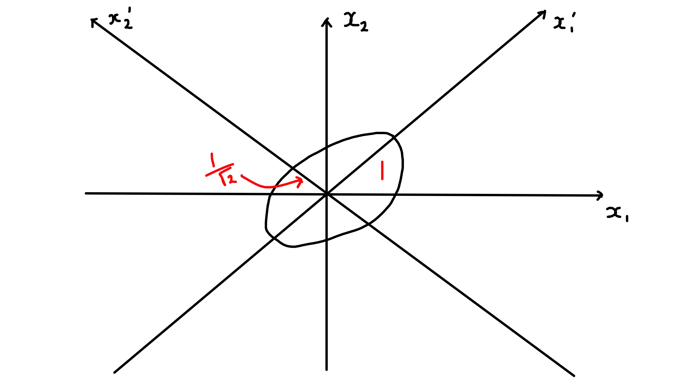

6 Eigenvalues and Eigenvectors
6.1 Introduction
6.1.1 Definitions
Definition 6.1 (Eigenvector and eigenvalue) For a linear map \(T : V \to V\) (\(V\) a real vector or complex vector space) a vector \(\underline{v} \in V\) with \(\underline{v} \neq \underline{0}\) is an eigenvector of \(T\) with eigenvalue \(\lambda\) if \[\begin{align*} T(\underline{v}) = \lambda \underline{v}. \end{align*}\]
If \(V = \mathbb{R}^n\) or \(\mathbb{C}^n\) and \(T\) is given by an \(n \times n\) matrix \(A\) then \[\begin{align*} A \underline{v} = \lambda \underline{v} \iff (A - \lambda I) \underline{v} = \underline{0} \end{align*}\] and for a given \(\lambda\) this holds for some \(\underline{v} \neq 0 \iff \det(A - \lambda I) = 0\), the characteristic equation, i.e. \(\lambda\) is an eigenvalue iff it is a root of \(\chi_A (t) = \det (A - tI)\), the characteristic polynomial. \(\chi_A (t)\) is a polynomial of degree \(n\) for \(A\) (\(n \times n\)). We find eigenvalues as roots of the characteristic equation/ polynomial and then determine corresponding eigenvectors.
6.1.2 Examples
Example 6.1 \[\begin{align*} V &= \mathbb{C}^2 \text{ and } A = \begin{pmatrix} 2 & i \\ -i & 2 \end{pmatrix} \\ \det (A - \lambda I) &= \begin{vmatrix} 2 - \lambda & i \\ -i & 2 - \lambda \end{vmatrix} \\ &= (2 - \lambda)^2 - 1 \\ &= 0 \iff \lambda = 1 \text{ or } 3. \end{align*}\] To find eigenvectors \(\underline{v} = \begin{pmatrix}v_1 \\v_2\end{pmatrix}\):
\(\lambda = 1\): \[\begin{align*} (A - I) \underline{v} &= \begin{pmatrix} 1 & i \\ -i & 1 \end{pmatrix} \begin{pmatrix}v_1 \\v_2\end{pmatrix} = \underline{0} \\ \implies \underline{v} &= \alpha \begin{pmatrix}1 \\i\end{pmatrix} \text{ any } \alpha \neq 0 \end{align*}\]
\(\lambda = 3\): \[\begin{align*} (A - 3I) \underline{v} &= \begin{pmatrix} -1 & i \\ -i & -1 \end{pmatrix} \begin{pmatrix}v_1 \\v_2\end{pmatrix} = \underline{0} \\ \implies \underline{v} &= \beta \begin{pmatrix}1 \\ -i\end{pmatrix} \text{ any } \beta \neq 0 \end{align*}\]
Example 6.2 \[\begin{align*} V &= \mathbb{R}^2 \text{ and } A = \begin{pmatrix} 1 & 1 \\ 0 & 1 \end{pmatrix} \\ \det (A - \lambda I) &= \begin{vmatrix} 1 - \lambda & 1 \\ 0 & 1 - \lambda \end{vmatrix} \\ &= (1 - \lambda)^2\\ &= 0 \iff \lambda = 1. \end{align*}\] To find eigenvectors \(\underline{v} = \begin{pmatrix}v_1 \\v_2\end{pmatrix}\):
\[\begin{align*} (A - I) \underline{v} &= \begin{pmatrix} 0 & 1 \\ 0 & 0 \end{pmatrix} \begin{pmatrix}v_1 \\v_2\end{pmatrix} = \underline{0} \\ \implies \underline{v} &= \alpha \begin{pmatrix}1 \\ 0\end{pmatrix} \text{ any } \alpha \neq 0 \end{align*}\]
Example 6.3 \[\begin{align*} V &= \mathbb{R}^2 \text{ or } \mathbb{C}^2\\ U &= \begin{pmatrix} \cos \theta & - \sin \theta \\ \sin \theta & \cos \theta \end{pmatrix} \\ \chi_U (t) &= \det (U - t I) \\ &= t^2 - 2t \cos \theta + 1 \\ \implies \lambda &= e^{\pm i \theta} \\ \implies \underline{v} &= \theta \begin{pmatrix}1 \\ \mp i\end{pmatrix} \ (\alpha \neq 0 ) \end{align*}\]
6.1.3 Deductions involving \(\chi_A(t)\)
For \(A\) \(n \times n\), characteristic polynomial has degree \(n\) \[\begin{align*} \chi_A(t) &= \det \begin{pmatrix} A_{11} - t & A_{12} & \dots & A_{1n} \\ A_{21} & A_{22} - t & \dots & A_{2n} \\ \vdots & \vdots & \ddots & \vdots \\ A_{n1} & A_{n2} & \dots & A_{nn} - t \end{pmatrix} \\ &= \sum_{j=0}^{n} c_j t^j, \text{ for some } c_j \in \mathbb{C} \\ &= (-1)^n (t - \lambda_1) \dots (t - \lambda_n) \end{align*}\]
\(\exists\) at least one eigenvalue (one root of \(\chi_A\)); in fact \(\exists\) \(n\) roots counted with multiplicity (FTA).
\(\operatorname{tr}(A) = A_{ii} = \sum_i \lambda_i\), sum of eigenvalues, by comparing terms of order \(n - 1\) in \(t\).
\(\det A = \chi_A(0) = \Pi_i \lambda_i\), product of eigenvalues.
If \(A\) is diagonal: \[\begin{align*} A = \begin{pmatrix} \lambda_1 & & \\ & \ddots & \\ & & \lambda_n \end{pmatrix} \end{align*}\] with the diagonal entries being the eigenvalues; (ii) and (iii) are then immediate.
If \(A\) is real, then coefficients \(c_j\) are real and \(\chi_A(\lambda) = 0 \iff \chi_A(\overline{\lambda}) = 0\): non-real roots occur in conjugate pairs.
6.2 Eigenspaces and Multiplicities
6.2.1 Definitions
Definition 6.2 (Eigenspace) For an eigenvalue \(\lambda\) of matrix \(A\), define the eigenspace \[\begin{align*} E_\lambda = \{ \underline{v} : A \underline{v} = \lambda \underline{v}\} = \ker (A - \lambda I), \end{align*}\] this is the subspace consisting of the eigenvectors and \(\underline{0}\).
Definition 6.3 (Geometric multiplicity) The geometric multiplicity \[\begin{align*} m_\lambda = \dim E_\lambda = \operatorname{null}(A - \lambda I), \end{align*}\] the number of linearly independent eigenvectors with eigenvalue \(\lambda\).
Definition 6.4 (Algebraic multiplicity) The algebraic multiplicity \(M_\Lambda\) is the multiplicity of \(\lambda\) as a root of \(\chi_A\), i.e. \(\chi_A(t) = (t-\lambda)^{M_\lambda} f(t)\) (with \(f(\lambda) \neq 0\)).
Proposition 6.1 \[\begin{align*} M_\lambda \geq m_\lambda \end{align*}\] Further discussion in 6.3.
6.2.2 Examples
Example 6.4
\[\begin{align*} A &= \begin{pmatrix} -2 & 2 & -3 \\ 2 & 1 & -6 \\ -1 & -2 & 0 \end{pmatrix} \\ \chi_A(t) &= \det (A - tI) \\ &= (5 - t) (t + 3)^2 \\ \text{roots } \lambda &= 5, - 3 \\ M_5 &= 1, M_{-3} = 2. \\ \\ \underline{\lambda = 5:} \\ (A - 5I)\underline{x} &= \begin{pmatrix} -7 & 2 & -3 \\ 2 & -4 & -6 \\ -1 & -2 & -5 \end{pmatrix}\begin{pmatrix}x_1 \\x_2 \\x_3\end{pmatrix} = \underline{0} \\ \implies E_5 &= \left\{ \alpha \begin{pmatrix}1 \\2 \\-1\end{pmatrix} \right\} \\ \\ \underline{\lambda = -3:} \\ (A + 3I)\underline{x} &= \begin{pmatrix} 1 & 2 & -3 \\ 2 & 4 & -6 \\ -1 & -2 & 3 \end{pmatrix}\begin{pmatrix}x_1 \\x_2 \\x_3\end{pmatrix} = \underline{0} \\ \text{Solve to find} \\ \underline{x} &= \begin{pmatrix}-2 x_1 + 3 x_3 \\x_2 \\x_3\end{pmatrix} \\ \implies E_{-3} &= \left\{ \alpha \begin{pmatrix}-2 \\1 \\0\end{pmatrix} + \beta \begin{pmatrix}3 \\0 \\1\end{pmatrix} \right\} \\ \\ m_5 &= \dim E_5 = 1 = M_5 \\ m_{-3} &= \dim E_{-3} = 2 = M_{-3} \end{align*}\]
\[\begin{align*} A &= \begin{pmatrix} -3 & -1 & 1 \\ -1 & -3 & 1 \\ -2 & -2 & 0 \end{pmatrix} \\ \chi_A(t) &= \det (A - tI) \\ &= - (t + 2)^3 \\ \text{root } \lambda &= -2 \\ M_{-2} &= 3 \\ \text{To find eigenvectors:} \\ (A + 2I)\underline{x} &= \begin{pmatrix} -1 & -1 & 1 \\ -1 & -1 & 1 \\ -2 & -2 & 2 \end{pmatrix} \begin{pmatrix}x_1 \\x_2 \\x_3\end{pmatrix} = \underline{0} \\ \implies \underline{x} &= \begin{pmatrix}- x_2 + x_3 \\ x_2\\ x_3\end{pmatrix} \\ \implies E_{-2} &= \left\{ \alpha \begin{pmatrix}-1 \\1 \\0\end{pmatrix} + \beta \begin{pmatrix}1 \\0 \\1\end{pmatrix} \right\} \\ m_{-2} &= \dim E_{-2} = 2 \\ \text{but } M_{-2} &= 3 \end{align*}\]
6.2.3 Linear Independence of Eigenvectors
Proposition 6.2
Let \(\underline{v}_1, \dots, \underline{v}_r\) be eigenvectors of matrix \(A\) (\(n \times n\)) with eigenvalues \(\lambda_1, \dots, \lambda_r\). If the eigenvalues are distinct, \(\lambda_i \neq \lambda_j\) for \(i \neq j\), then the eigenvectors are linearly independent.
With conditions as in (i), let \(\mathcal{B}_{\lambda_i}\) be a basis for \(E_{\lambda_i}\), then \[\begin{align*} \mathcal{B}_{\lambda_1} \cup \mathcal{B}_{\lambda_2} \cup \dots \cup \mathcal{B}_{\lambda_r} \end{align*}\] is linearly independent.
Proof.
- \[\begin{align*} \text{Note } \underline{w} &= \sum_{j=1}^{r} \alpha_j \underline{v}_j \\ \implies (A - \lambda I) \underline{w} &= \sum_{j=1}^{r} \alpha_j (\lambda_j - \lambda) \underline{v}_j, \text{ as } A \underline{v}_j = \lambda_j \underline{v}_j \\ \end{align*}\]
First, suppose the eigenvectors are linear dependent, so \(\exists\) linear relations \(\underline{w} = 0\) with a number of non-zero coefficients \(p \geq 2\). Pick a \(\underline{w}\) for which \(p\) is least and assume (wlog) \(\alpha_1 \neq 0\). Then \((A - \lambda_1 I) \underline{w} = \sum_{j>1} \alpha_j (\lambda_j - \lambda_1) \underline{v}_j = \underline{0}\) is a linear relation with \(p - 1\) non-zero coefficients ⨳.
Or secondly, \[\begin{align*} \underline{w} &= \underline{0} \implies \Pi_{j \neq k} (A - \lambda_j I) \underline{w} \text{ for some chosen } k \\ &= \alpha_k (\Pi_{j \neq k} (\lambda_k - \lambda_j)) \underline{v}_k = \underline{0}, \implies \alpha_k &= 0 \end{align*}\] hence eigenvectors are linearly independent.
- It suffices to show that if \(\underline{w} = \underline{w}_1 + \underline{w}_2 + \dots + \underline{w}_r = \underline{0}\) with \(\underline{w}_i \in E_{\lambda_i}\) \[\begin{align*} \implies \underline{w}_i = \underline{0}. \end{align*}\] This follows by same arguments as in (i).
6.3 Diagonalisability and Similarity
6.3.1 Introduction
Proposition 6.3 For a \(n \times n\) matrix \(A\) acting on \(V = \mathbb{R}^n\) or \(\mathbb{C}^n\), the following conditions are equivalent:
There exists a basis of eigenvectors for \(V\), \(\underline{v}_1, \underline{v}_2, \dots, \underline{v}_n\) with \(A \underline{v}_i = \lambda_i \underline{v}_i\) (not \(\sum_i\) and \(\lambda_i\) need not be distinct).
There exists an \(n \times n\) invertible matrix \(P\) with \[\begin{align*} P^{-1} A P = D = \begin{pmatrix} \lambda_1 & & \\ & \ddots & \\ & & \lambda_n \end{pmatrix} \end{align*}\]
If either of these conditions holds, \(A\) is diagonalisable.
Proof. Note that for any matrix \(P\), \(AP\) has columns \(A \underline{C}_i(P)\) and \(PD\) has columns \(\lambda_i \underline{C}_i(P)\) for each \(i\). Then (i) and (ii) are related by \[\begin{align*} \underline{v}_i &= \underline{C}_i(P): \\ P^{-1} A P &= D \iff AP = PD \iff A \underline{v}_i = \lambda_i \underline{v}_i. \end{align*}\]
Example 6.5 Refer to 6.3: Eigenvalues \(e^{\pm i \theta}\) and eigenvectors \(\begin{pmatrix}1 \\ \mp i\end{pmatrix}\), the eigenvectors are linearly independent over \(\mathbb{C}\). \[\begin{align*} P &= \begin{pmatrix} 1 & 1 \\ -i & i \end{pmatrix} \implies P^{-1} = \frac{1}{2} \begin{pmatrix} 1 & i \\ 1 & -i \end{pmatrix} \\ P^{-1} U P &= \begin{pmatrix} e^{i\theta} & 0 \\ 0 & e^{-i \theta} \end{pmatrix} \end{align*}\] \(U\) is diagonalisable over \(\mathbb{C}\) but not over \(\mathbb{R}\).
6.3.2 Criteria for Diagonalisability
Theorem 6.1 Let \(A\) be a \(n \times n\) matrix and \(\lambda_1, \dots, \lambda_r\) all its distinct eigenvalues.
A necessary and sufficient condition: \(A\) is diagonalisable iff \[\begin{align*} M_{\lambda_i} = m_{\lambda_i} \text{ for } i = 1, \dots, r \end{align*}\]
A sufficient condition: \(A\) is diagonalisable if there are \(n\) distinct eigenvalues, i.e. \(r = n\).
Proof. Use Proposition 6.2
If \(r = n\) we have \(n\) distinct eigenvalues and hence \(n\) linearly independent eigenvectors, which form a basis (for \(\mathbb{R}^n\) or \(\mathbb{C}^n\)).
Choosing bases \(\mathcal{B}_{\lambda_i}\) for each eigenspace, \[\begin{align*} \mathcal{B}_{\lambda_1} \cup \mathcal{B}_{\lambda_2} \cup \dots \cup \mathcal{B}_{\lambda_r} \end{align*}\] is a linearly independent set of \(m_{\lambda_1} + m_{\lambda_2} + \dots + m_{\lambda_r}\) vectors. It is a basis (for \(\mathbb{R}^n\) or \(\mathbb{C}^n\)) iff we have \(n\) vectors. But \[\begin{align*} m_{\lambda_i} &\leq M_{\lambda_i} \\ \text{and } M_{\lambda_1} + M_{\lambda_2} + \dots + M_{\lambda_r} &= n. \text{ (as there are n roots)} \end{align*}\] Hence we have a basis iff \[\begin{align*} M_{\lambda_i} = m_{\lambda_i} \text{ for each } i. \end{align*}\]
Refer to Examples i. \[\begin{align*} A &= \begin{pmatrix} -2 & 2 & -3 \\ 2 & 1 & -6 \\ -1 & -2 & 0 \end{pmatrix} \\ \lambda &= 5, - 3 \\ m_5 &= 1 = M_5 \\ m_{-3} &= 2 = M_{-3} \\ \implies A &\text{ is diagonalisable} \\ P &= \begin{pmatrix} 1 & -2 & 3 \\ 2 & 1 & 0 \\ -1 & 0 & 1 \end{pmatrix}, P^{-1} = \frac{1}{8} \begin{pmatrix} 1 & 2 & -3 \\ -2 & 4 & 6 \\ 1 & 2 & 5 \end{pmatrix} \\ P^{-1} A P &= \begin{pmatrix} 5 & 0 & 0 \\ 0 & -3 & 0 \\ 0 & 0 & -3 \end{pmatrix} \text{ as expected}. \end{align*}\]
- \[\begin{align*} A &= \begin{pmatrix} -3 & -1 & 1 \\ -1 & -3 & 1 \\ -2 & -2 & 0 \end{pmatrix} \\ \lambda &= -2 \\ M_{-2} &= 3 > m_{-2} = 2 \\ \implies A &\text{ is not diagonalisable} \text{Check: if it was } P^{-1} A P &= - 2 I \\ \implies A &= P (-2 I) P^{-1} = - 2I ⨳. \end{align*}\]
6.3.3 Similarity
Matrices \(A\) and \(B\) (\(n \times n\)) are similar if \[\begin{align*} B = P^{-1} A P \end{align*}\] for some invertible \(P\) (\(n \times n\)). This is an equivalence relation.
Proposition 6.4 If \(A\) and \(B\) are similar, then
\(B^r = P^{-1} A^r P\) for \(r \geq 0\)
\(B^{-1} = P^{-1} A^{-1} P\) (if either \(A\) or \(B\) is invertible, so is the other)
\(\operatorname{tr}(B) = \operatorname{tr}(A)\)
\(\det B = \det A\)
\(\chi_B(t) = \chi_A(t)\)
Proof.
- is immediate.
- is immediate.
\[\begin{align*} \operatorname{tr}(B) &= \operatorname{tr}(P^{-1} A P) \\ &= \operatorname{tr}(APP^{-1}) \\ &= \operatorname{tr}(A). \end{align*}\]
\[\begin{align*} \det(B) &= \det(P^{-1} A P) \\ &= \det(P^{-1}) \det(A) \det(P) \\ &= \det A. \end{align*}\]
\[\begin{align*} \det(B - tI) &= \det(P^{-1}AP - tI) \\ &= \det(P^{-1} (A - tI) P) \\ &= \det(A - tI) \text{ as in (iv)}. \end{align*}\]
6.4 Hermitian and Symmetric Matrices
6.4.1 Real Eigenvalues and Orthogonal Eigenvectors
Recall: matrix \(A\) (\(n \times n\)) is hermitian if \[\begin{align*} A^\dagger = \overline{A}^T = A \text{ or } A_{ij} + \overline{A}_{ji} \end{align*}\] special case: \(A\) is real and symmetric \[\begin{align*} \overline{A} = A \text{ and } A^T = A \text{ or } \begin{cases} A_{ij} &= \overline{A}_{ij} \\ A_{ij} &= A_{ji} \end{cases}. \end{align*}\] Recall: complex inner-product for \(\underline{v}, \underline{w} \in \mathbb{C}^n\) is \[\begin{align*} \underline{v}^\dagger \underline{w} &= \sum_i \overline{v}_i w_i \end{align*}\] and for \(\underline{v}, \underline{w} \in \mathbb{R}^n\) this reduces to \[\begin{align*} \underline{v}^T \underline{w} = \underline{v} \cdot \underline{w} = \sum_i v_i w_i \end{align*}\] Observation: If \(A\) is hermitian then \[\begin{align*} (A \underline{v})^\dagger \underline{w} &= \underline{v}^\dagger (A \underline{w}) \ \forall \; \underline{v}, \underline{w} \in \mathbb{C}^n \\ \end{align*}\]
Proof. \[\begin{align*} (A \underline{v})^\dagger \underline{w} &= (\underline{v}^\dagger A^\dagger) \underline{w} \\ &= \underline{v}^\dagger A \underline{w} \\ &= \underline{v}^\dagger (A \underline{w}) \end{align*}\]
Theorem 6.2 For a matrix \(A\) (\(n \times n\)) that is hermitian
Every eigenvalue \(\lambda\) is real
Eigenvectors \(\underline{v}, \underline{w}\) with distinct eigenvalues \(\lambda, \mu\) respectively (\(\lambda \neq \mu\)) are orthogonal \[\begin{align*} \underline{v}^\dagger \underline{w} = 0 \end{align*}\]
If \(A\) is real and symmetric then for each \(\lambda\) in (i) we can choose a real eigenvector \(\underline{v}\) and (ii) becomes \[\begin{align*} \underline{v}^T \underline{w} = \underline{v} \cdot \underline{w} = 0 \end{align*}\]
Proof.
\[\begin{align*} \underline{v}^\dagger (A \underline{v}) &= (A \underline{v}^\dagger) \underline{v} \\ \implies \underline{v}^\dagger (\lambda \underline{v}) &= (\lambda \underline{v})^\dagger \underline{v} \\ \implies \lambda \underline{v}^\dagger \underline{v} &= \overline{\lambda} \underline{v}^\dagger \underline{v} \\ \end{align*}\] for \(\underline{v}\) an eigenvector with eigenvalue \(\lambda\). But \(\underline{v} \neq 0\) so \(\underline{v}^\dagger \underline{v} \neq 0\) and so \(\lambda = \overline{\lambda}\).
\[\begin{align*} \underline{v}^\dagger (A \underline{w}) &= (A \underline{v})^\dagger \underline{w} \\ \implies \underline{v}^\dagger (\mu \underline{w}) &= (\lambda \underline{v})^\dagger \underline{w} \\ \implies \mu \underline{v}^\dagger \underline{w} &= \overline{\lambda} \underline{v}^\dagger \underline{w} \\ &= \lambda \underline{v}^\dagger \underline{w} \text{ (from (i))} \end{align*}\]
But \(\mu \neq \lambda\) so \(\underline{v}^\dagger \underline{w} = 0\).Given \(A \underline{v} = \lambda \underline{v}\) with \(\underline{v} \in \mathbb{C}^n\) and \(A, \lambda\) real, let \(\underline{v} = \underline{u} + i \underline{u'}\) with \(\underline{u}, \underline{u'} \in \mathbb{R}^n\). Then \(A \underline{u} = \lambda \underline{u}\) and \(A \underline{u'} = \lambda \underline{u'}\) but \(\underline{v} \neq \underline{0} \implies\) one of \(\underline{u}, \underline{u'} \neq 0\) so there is at least one real eigenvector.
6.4.2 Unitary and Orthogonal Diagonalisation
Theorem 6.3 Any \(n \times n\) hermitian matrix \(A\) is diagonalisable (as in Introduction)
\(\exists\) a basis of eigenvectors \(\underline{u}_1, \dots, \underline{u}_n \in \mathbb{C}^n\) with \(A \underline{u}_i = \lambda_i \underline{u}_i\); equivalently
\(\exists \; n \times n\) invertible matrix \(P\) with \(P^{-1} A P = D = \begin{pmatrix}\lambda_1 & & \\ & \ddots & \\ & & \lambda_n\end{pmatrix}\); columns of \(P\) are eigenvectors \(\underline{u}_i\).
In addition: these eigenvectors \(\underline{u}_i\) can be chosen to be orthonormal \(\underline{u}_i^\dagger \underline{u}_j = \delta_{ij}\); equivalently the matrix \(P\) can be chosen to be unitary \(P^\dagger = P^{-1}\) so \(P^\dagger A P = D\).
Special case: for \(n \times n\) real symmetric \(A\), can choose eigenvectors \(\underline{u}_1, \dots, \underline{u}_n \in \mathbb{R}^n\) with \(\underline{u}_i^T \underline{u}_j = \underline{u}_i \underline{u}_j = \delta_{ij}\); equivalently the matrix \(P\) can be chosen to be orthogonal \(P^T = P^{-1}\) so \(P^T A P = D\).
Proof of diagonalisability is not examinable and remaining statements follow by combining results of Eigenspaces and Multiplicities and Diagonalisability and Similarity and choosing orthonormal basis for each eigenspace.
Example 6.6
\(A = \begin{pmatrix}2 & i \\-i & 2\end{pmatrix}, A^\dagger = A\) so hermitian (as in Examples). \(\lambda_1 = 1, \lambda_2 = 3\) and choose \[\begin{align*} \underline{u}_1 = \frac{1}{\sqrt{2}} \begin{pmatrix}1 \\i\end{pmatrix}, \underline{u}_2 = \frac{1}{\sqrt{2}} \begin{pmatrix}1 \\-i\end{pmatrix} \end{align*}\] to ensure \(\underline{u}_1^\dagger \underline{u}_1 = \underline{u}_2^\dagger \underline{u}_1 = 1\) and note \(\underline{u}_1^\dagger \underline{u}_2 = \frac{1}{2} (1 - i) \begin{pmatrix}1 \\-i\end{pmatrix} = 0\). Let \(P = \frac{1}{\sqrt{2}} \begin{pmatrix}1 & 1 \\i & -i\end{pmatrix}\) then \(P^\dagger = P^{-1}\) so unitary and \(P^\dagger A P = \begin{pmatrix}1 & 0 \\0 & 3\end{pmatrix}\).
\(A = \begin{pmatrix}0 & 1 & 1 \\1 & 0 & 1 \\1 & 1 & 0\end{pmatrix}, A^T = A\) so real and symmetric. \(\lambda_1 = \lambda_2 = -1, \lambda_3 = 2\) and can choose \[\begin{align*} \underline{u}_1 = \frac{1}{\sqrt{2}} \begin{pmatrix}1 \\-1 \\0\end{pmatrix}, \underline{u}_2 = \frac{1}{\sqrt{6}} \begin{pmatrix}1 \\1 \\-2\end{pmatrix}, \underline{u}_3 = \frac{1}{\sqrt{3}} \begin{pmatrix}1 \\1 \\1\end{pmatrix}. \end{align*}\]9 Let \(P\) be the matrix with columns \(\underline{u}_1, \underline{u}_2, \underline{u}_3\) then \(P^T = P^{-1}\) so \(P\) is orthogonal and \(P^T A P = \begin{pmatrix}-1 & 0 & 0 \\0 & -1 & 0 \\0 & 0 & 2\end{pmatrix}\).
6.5 Quadratic Forms
Consider \(\mathcal{F} : \mathbb{R}^2 \to \mathbb{R}\) defined by \(\mathcal{F}(\underline{x}) = 2 x_1^2 - 4 x_1 x_2 + 5 x_2^2\). This can be expressed as \(\mathcal{F}(\underline{x}) = x_1'^2 + 6 x_2'^2\) where \[\begin{align*} x_1' &= \frac{1}{\sqrt{5}} (2 x_1 + x_2) \\ x_2' &= \frac{1}{\sqrt{5}} (- x_1 + 2 x_2) \end{align*}\] with \(x_1'^2 + x_2'^2 = x_1^2 + x_2^2\). To understand this better, note \(\mathcal{F}(\underline{x}) = \underline{x}^T A \underline{x}\) where \(A = \begin{pmatrix}2 & -2 \\-2 & 5\end{pmatrix}\) and we can diagonalise \(A\): \(\lambda_1 = 1, \lambda_2 = 6\) and orthonormal eigenvectors \[\begin{align*} \underline{u}_1 &= \frac{1}{\sqrt{5}} \begin{pmatrix}2 \\1\end{pmatrix}, \underline{u}_2 = \frac{1}{\sqrt{5}} \begin{pmatrix}-1 \\2\end{pmatrix} \\ \text{Then } x_1' &= \underline{u}_1 \cdot \underline{x} \\ x_2' &= \underline{u}_2 \cdot \underline{x} \end{align*}\] give the simplified form for \(\mathcal{F}\).
In general, a quadratic form is a function
\[\begin{align*}
\mathcal{F} : \mathbb{R}^n &\to \mathbb{R} \\
\underline{x} &\mapsto \underline{x}^T A \underline{x} = x_i A_{ij} x_j
\end{align*}\] where \(A\) is a \(n \times n\) real symmetric matrix.
From Hermitian and Symmetric Matrices \[\begin{align*}
P^T A P &= D = \begin{pmatrix}\lambda_1 & & \\ & \ddots & \\ & & \lambda_n\end{pmatrix}
\end{align*}\] where \(\lambda_i\) are the eigenvalues of \(A\) and \(P\) is orthogonal with columns \(\underline{u}_i\), the orthonormal eigenvectors.
Let \(\underline{x}' = P^T \underline{x}\) or \(\underline{x} = P \underline{x}'\), then
\[\begin{align*}
\mathcal{F}(\underline{x}) &= \underline{x}^T A \underline{x} \\
&= (P \underline{x}')^T A (P \underline{x}') \\
&= (\underline{x}')^T (P^T A P) \underline{x}' \\
&= (\underline{x}')^T D \underline{x}' \\
&= \sum_i \lambda_i x_i'^2 \\
&= \lambda_1 x_1'^2 + \dots + \lambda_n x_n'^2.
\end{align*}\]
\(\mathcal{F}\) has been diagonalised.
\[\begin{align*}
\text{Now } \underline{x}' &= x_1' + \underline{e}_1 + \dots + x_n' \underline{e}_n \\
\underline{x} &= x_1 \underline{e}_1 + \dots + x_n \underline{e}_n \\
&= x_1' \underline{u}_1 + \dots + x_2 \underline{u}_n \\
\text{since } x_i' &= \underline{u}_i \cdot \underline{x} \iff \underline{x}' = P^T \underline{x}
\end{align*}\]
Thus, \(x_i'\) are coordinates w.r.t new axes given by orthonormal basis vectors \(\underline{u}_i\), these are called the principal axes of \(\mathcal{F}\).
Relation to original axes along standard basis vectors \(\underline{e}_i\) and coordinates \(x_i\) is given by an orthogonal transformations
\[\begin{align*}
|\underline{x}|^2 &= x_i x_i = x_i' x_i'.
\end{align*}\]
6.5.1 Examples in \(\mathbb{R}^2\) and \(\mathbb{R}^3\)
6.5.1.1 In \(\mathbb{R}^2\)
\[\begin{align*} \mathcal{F}(\underline{x}) &= \underline{x}^T A \underline{x} \\ \text{with } A &= \begin{pmatrix}\alpha & \beta \\\beta & \alpha\end{pmatrix} \\ \text{Eigenvalues: } \lambda_1 &= \alpha + \beta, \lambda_2 &= \alpha - \beta \\ \text{Eigenvectors: } \underline{u}_1 &= \frac{1}{\sqrt{2}} \begin{pmatrix}1 \\1\end{pmatrix}, \underline{u}_2 = \begin{pmatrix}-1 \\1\end{pmatrix} \\ \mathcal{F}(\underline{x}) &= \alpha x_1^2 + 2 \beta x_1 x_2 + \alpha x_2^2 \\ &= (\alpha + \beta) x_1'^2 + (\alpha - \beta) x_2'^2 \\ \text{with } x_1' &= \frac{1}{\sqrt{2}} (x_1 + x_2) \\ x_2' &= \frac{1}{\sqrt{2}} (-x_1 + x_2) \end{align*}\]
\[\begin{align*} \alpha &= \frac{3}{2}, \beta = - \frac{1}{2} \\ \implies \lambda_1 &= 1, \lambda_2 = 2 \\ \mathcal{F}(x) &= x_1'^2 + 2 x_2'^2 = 1 \end{align*}\] defines an ellipse 
\[\begin{align*} \alpha &= -\frac{1}{2}, \beta = \frac{3}{2} \\ \implies \lambda_1 &= 1, \lambda_2 = - 2 \\ \mathcal{F}(x) &= x_1'^2 - 2 x_2'^2 = 1 \end{align*}\] defines an hyperbola

6.5.1.2 In \(\mathbb{R}^3\)
\(\mathcal{F}(x) = \underline{x}^T A \underline{x} = \lambda_1 x_1'^2 + \lambda_2 x_2'^2 + \lambda_3 x_3'\) after diagonalisation.
If \(A\) has eigenvalues \(\lambda_1, \lambda_2, \lambda_3 > 0\) then \(\mathcal{F} = 1\) defines an ellipsoid.
\(A = \begin{pmatrix}0 & 1 & 1 \\1 & 0 & 1 \\1 & 1 & 0\end{pmatrix}\) (from example 6.6), \(\lambda_1 = \lambda_2 = -1, \lambda_3 = 2\). Hence \[\begin{align*} \mathcal{F} &= 2 x_1 x_2 + 2 x_2 x_3 + 2 x_3 x_1 \\ &= - x_1'^2 - x_2'^2 + 2 x_3'^2 \\ \mathcal{F} &= 1 \iff 2 x_3'^2 = 1 + x_1'^2 + x_2'^2 \end{align*}\] defines a hyperboloid (2 sheeted)

\(\mathcal{F} = -1 \iff x_1'^2 + x_2'^2 = 1 + 2 x_3'^2\) defined a hyperboloid (2 sheeted).
6.6 Cayley-Hamilton Theorem
If \(A\) is a \(n \times n\) complex matrix and
\(f(t) = c_0 + c_1 t + \dots + c_k t^k\) is a poly of degree k, then
\[\begin{align*}
f(A) = c_0 I + c_1 A + \dots + c_k A^k.
\end{align*}\]
We can also define power series of matrices subject to convergence
\[\begin{align*}
\text{e.g. } \exp A = I + A + \dots + \frac{1}{r!} A^r + \dots
\end{align*}\] converges for any \(A\).
Note
If \(D = \begin{pmatrix}\lambda_1 & & \\ & \ddots & \\ & & \lambda_n\end{pmatrix}\) is diagonal then \(D^r = \begin{pmatrix}\lambda_1^r & & \\ & \ddots & \\ & & \lambda_n^r\end{pmatrix}\) and \(f(D) = \begin{pmatrix}f(\lambda_1) & & \\ & \ddots & \\ & & f(\lambda_n)\end{pmatrix}\).
If \(B = P^{-1} A P\) for invertible \(P\), i.e. \(A\) and \(B\) are similar then \(B^r = P^{-1} A^r P\) and \(f(B) = f(P^{-1} A P) = P^{-1} f(A) P\).
Recall the characteristic polynomial is \(\chi_A(t) = \det (A - tI) = c_0 + c_1 t + \dots + c_n t^n\) where \(c_0 = \det A\) and \(c_n = (-1)^n\), Deductions involving \(\chi_A(t)\).
Theorem 6.4 (Cayley-Hamilton) \[\begin{align*} \chi_A(t) &= c_0 I + c_1 A + \dots + c_n A^n = 0 \end{align*}\] “a matrix satisfies its own characteristic equation”
Note Cayley-Hamilton, 6.4, implies \[\begin{align*} c_0 I = - A \left(c_1 I + \dots + c_n A^{n-1} \right) \end{align*}\] and if \(c_0 = \det A \neq 0\) then \[\begin{align*} A^{-1} &= - \frac{1}{c_0} \left(c_1 I + \dots + c_n A^{n-1} \right) \end{align*}\]
Proof.
General \(2 \times 2\) matrix \[\begin{align*} A = \begin{pmatrix}a & b \\c & d\end{pmatrix} \implies \chi_A(t) = t^2 - (a + d)t + (ad - bc) \end{align*}\] then check by substitution that \(\chi_A(A) = 0\). (Sheet 4)
Diagonalisable \(n \times n\) matrix: consider \(A\) with evals \(\lambda_i\) and invertible \(P\) s.t. \[\begin{align*} PAP^{-1} &= D = \begin{pmatrix}\lambda_1 & & \\ & \ddots & \\ & & \lambda_n\end{pmatrix}.\\ \text{Now } \chi_A(D) &= \begin{pmatrix}\chi_A(\lambda_1) & & \\ & \ddots & \\ & & \chi_A(\lambda_n) \end{pmatrix} = 0 \text{since $\chi_A$ is poly and $\lambda_i$ evals} \\ \text{Then } \chi_A(A) &= \chi_A(P^{-1} D P) \\ &= P^{-1} \chi_A(D) P \\ &= 0 \end{align*}\]
For symmetric \(3 \times 3\) matrices, we may guess that \(\begin{pmatrix}1 & 1 & 1\end{pmatrix}^T\) is an eigenvector.↩︎